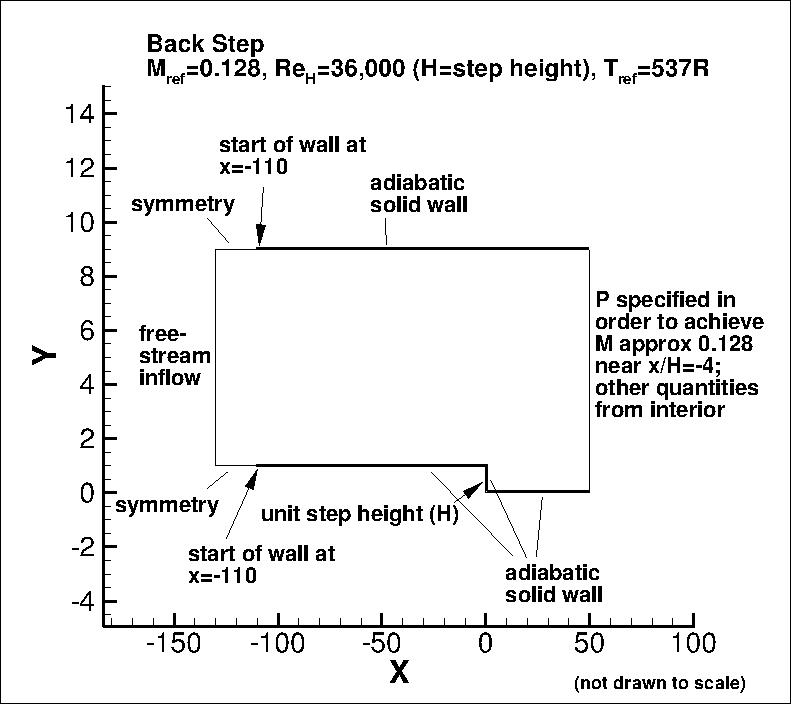

Public Access (formerly Langley Research Center)Turbulence Modeling Resource |
Return to: Turbulence Modeling Resource Home Page
2DBFS: 2D Backward Facing Step
NOTE: Previous versions of this page
listed the Re based on step height as 50,000, but the actual value according to D. M. Driver
(personal communication) should be approximately 36,000. Although this change generally
results in only relatively minor differences,
all CFD results have been updated as of 8/24/2012.
The purpose here is to provide a
validation case for turbulence models. Unlike verification, which seeks to
establish that a model has been implemented correctly, validation compares
CFD results against data in an effort to establish a model's ability to
reproduce physics. A large sequence of nested grids of the same family are
provided here if desired. Data are also provided for comparison. For this
particular "essentially incompressible" backward facing step problem,
the data are from an experiment.
This is a widely-tested configuration. The particular data given here are from
Driver and Seegmiller. This is also a test case given in the
ERCOFTAC Database (Classic Collection)
#C.30 (Backward facing step with inclined opposite wall), and has also been used in turbulence modeling
workshops (see references below).
In this case, a turbulent boundary layer encounters a sudden back step, causing
flow separation. The flow then reattaches and recovers downstream of the step.
The Reynolds number based on boundary layer momentum thickness prior to the step
is 5000. This corresponds to a Reynolds number
of approximately 36,000 based on step height H. The boundary layer thickness prior
to the step is approximately 1.5H.
Boundary conditions appropriate for the CFD are shown in the following figure.
Other than a short region with symmetry imposed (to avoid possible incompatibilities
between freestream inflow and wall BCs), both bottom and top walls are treated as viscous walls.
The original experiment varied the top wall angle, but for this test case here only
a straight top wall (zero angle) is considered.
In this case, the inflow length prior to the area of interest (near x=0)
has been adjusted so that the naturally developing
turbulent boundary layer on the lower wall in the CFD solution grows to approximately
the correct thickness and yields approximately the correct wall skin friction
coefficient prior to the step. (Note that in some other studies, the inflow
boundary layer profile is prescribed near x/H=-4 instead.)
The back pressure is adjusted to yield approximately the correct Mach number
(M=0.128) upstream of the step.
(Note that particular variations of the BCs at the inflow and outflow may also work
and yield similar results for this problem.)

Some of the experimental data for this case are shown below.
Velocity and turbulence profiles of interest are chosen at the following x/H locations downstream
of the step: x/H = 1, 4, 6, and 10.
The experimental data reference is: Driver, D. M. and Seegmiller, H. L., "Features of Reattaching
Turbulent Shear Layer in Divergent Channel Flow," AIAA Journal, Vol. 23, No. 2, Feb 1985, pp. 163-171,
https://doi.org/10.2514/3.8890.
See also Eca et al papers: AIAA-2009-3647,
https://doi.org/10.2514/6.2009-3647, AIAA-2007-4089,
https://doi.org/10.2514/6.2007-4089, and AIAA-2005-4728,
https://doi.org/10.2514/6.2005-4728
for summaries of workshops that used this experimental data (although note inconsistencies in ReH).
The Uref is the reference velocity at the center-channel near x/H=-4, used to nondimensionalize
velocity and turbulent shear stress profiles.
The skin friction coefficient and pressure coefficient data were also both with respect to conditions near this location.
Note, however, that when plotted the pressure coefficient data has been shifted uniformly so that
Cp is 0 near the position x/H=40 or so. (This was also done by
Eca et al in the V&V Workshops referenced above.) The Cp experimental data file provided below contains
both original and shifted values.
One of the key measures of success for this flowfield is the prediction of reattachment point
downstream of the step. In the experiment, this was determined (by laser oil-flow interferometer
measurements of skin-friction and interpolation of the zero skin-friction location) to be:
x/Hreattach = 6.26 +- 0.10
The experimental data used are provided here:
What to Expect:
(Other turbulence model results may be added in the future.)
Note that the OVERFLOW code has documented its results for this validation case (for the SA-noft2, SA-noft2-RC, SST, and SST-V
turbulence models) in NAS Technical Paper 2016-01 (pdf file)
(18.3 MB) by Jespersen, Pulliam, and Childs.
Return to: Turbulence Modeling Resource Home Page
Recent significant updates:

Note that the complete original data from this experiment are included on this site in the
Collaborative Testing of Turbulence Models page, under "More Recent
Incompressible Flow Cases".
RESULTS
LINK TO EQUATIONS
MRR Level
SA
SA eqns
4
SSTm
SSTm eqns
3
SST-Vm
SST-Vm eqns
3
Wilcox2006-klim-m
Wilcox2006-klim-m eqns
2
K-kL-MEAH2015m
K-kL-MEAH2015m eqns
3
EASMko2003-S
EASMko2003-S eqns
1
K-e-Rt
K-e-Rt eqns
1
08/28/2020 - changed SST-V naming to SST-Vm
10/17/2015 - corrected minor typo in experimental Backstep Cf data file
02/28/2014 - more description of Cp shift, and new Cp data file
03/07/2014 - BC figure modified
Page Curators: Christopher Rumsey,
Ethan Vogel,
Clark Pederson
Last Updated: 11/18/2021